✦ LIVING TOWN EXPLORERTHE LITTLE TOWN
ETAPY 11–14 · ŻYWE MIASTECZKO
Żywe Miasteczko.
Nie tylko patrz. Dotknij, odkrywaj, rozmawiaj. W Miasteczku pod Chmurami wszystko ma swoją historię — i własne angielskie słowo.
🦉 Lumo czeka. Możesz spacerować także wtedy, gdy dopiero zaczynasz uczyć się słówek.
0/6odwiedzone miejsca
0/32poznane słowa w miasteczku
0/6ukończone mini-przygody
✦ DZIEŃ PIERWSZY · WITAJ W MIASTECZKU POD CHMURAMI
Miasteczko, które odpowiada na dotyk.
Kliknij rozświetlone miejsca, by wejść do ich wnętrza. Włącz wieczór, posłuchaj Lumo i zobacz, jak zmienia się miasto.
↔ Na mniejszym ekranie możesz przesunąć mapę w bok. Wszystkie sześć miejsc jest też dostępnych na kartach poniżej.
Cześć! Tu Lumo. W miasteczku czeka już sześć opowieści. Wybierz miejsce, a pokażę Ci drogę!

THE LOST STAR✦ STORY 01
✦ ETAP 13 · WIELKA OPOWIEŚĆ MIASTECZKA
Kiedy gwiazda gaśnie, przygoda się zaczyna.
Trzy rozdziały, osiem możliwych dróg, cztery finały. Raz popłyniesz z Lumo łódką, innym razem pojedziesz pociągiem. Pomożesz Tuli albo odwiedzisz sklepik — a potem sam zdecydujesz, jak rozświetlić miasteczko.
📖 3 rozdziały🧭 8 tras✨ 4 zakończenia
Otwórz Tajemnicę Zgaszonej Gwiazdy
Historia zapisuje się lokalnie. Pytania wyłącznie z poznanych słów.
✦ OTWÓRZ DRZWI · WEJDŹ DO ŚRODKA
Małe miejsca. Wielkie odkrycia.
Każdy przedmiot na ilustracji można dotknąć. W mini-misji Lumo poprosi Cię o rozpoznanie słów, ruchów lub wypowiedzi, które już znasz.
✧ ETAP 14 · SEKRETNA POCZTA LUMO
Sześć śladów. Jedna tajemna konstelacja.
W każdym z sześciu miejsc skrywa się maleńka pamiątka. Szukaj połyskującego symbolu ✧ na ilustracji. Każde odkrycie odsłania kolejną kartę, a odnalezione sekrety zmieniają także Wielką Opowieść.
0 / 6odkrytych sekretów
✉ LUMO'S SECRET POSTCARDS✦ ✦ ✦
Nie musisz znać wszystkich słów, by odkrywać świat — samo znalezienie sekretu nie jest testem.📖 Sprawdź, jak sekrety zmieniają opowieść ↗
✦ MAŁA KSIĘGA WIELKICH ODKRYĆ
Dziennik miejskich przygód.
Każde ukończone miejsce zostawia pamiątkę. Możesz wrócić do jego historii lub wydrukować kartkę z odkryciami.
MY LITTLE TOWN JOURNAL✦ ✧ ✦
EVERY LITTLE DISCOVERY MATTERSPierwsza pamiątka już na Ciebie czeka.
Zapis działa na tym urządzeniu, w tej przeglądarce. Dziennik nie zastępuje sprawdzianu i nie ocenia wymowy. Dotknięcie przedmiotu podczas swobodnego zwiedzania nie daje punktów za naukę.

✦ NOWY ROZDZIAŁ · ETAP 15
W miasteczku przyszła poczta!
W Obserwatorium Lumo pojawiły się cztery koperty. Przeczytaj wiadomości od Tuli, kapitana, Lili i Feli, sprawdź znane słówka i odbierz własny stempel w Gwiezdnej Poczcie.
💌 Otwórz Gwiezdną Pocztę Lumo ↗Listy można czytać bez sprawdzianów · Zadania tylko z poznanych słów